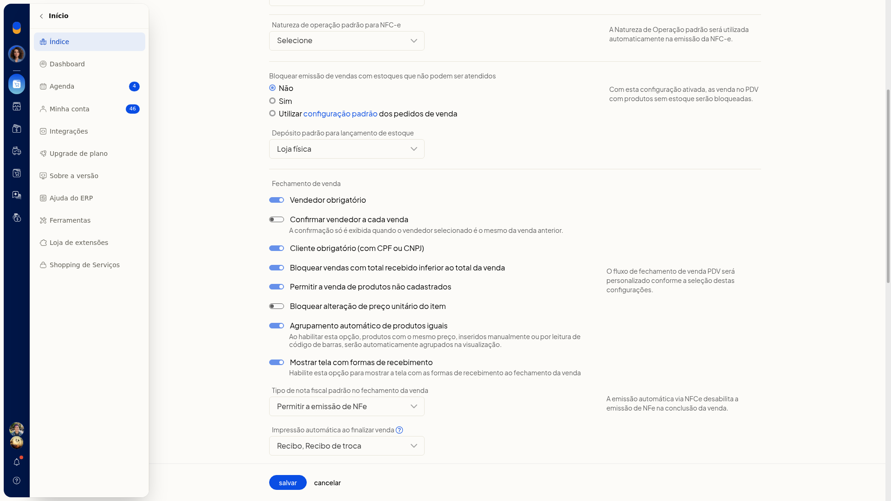
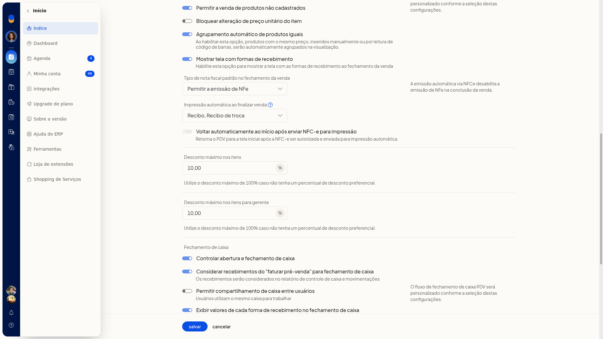
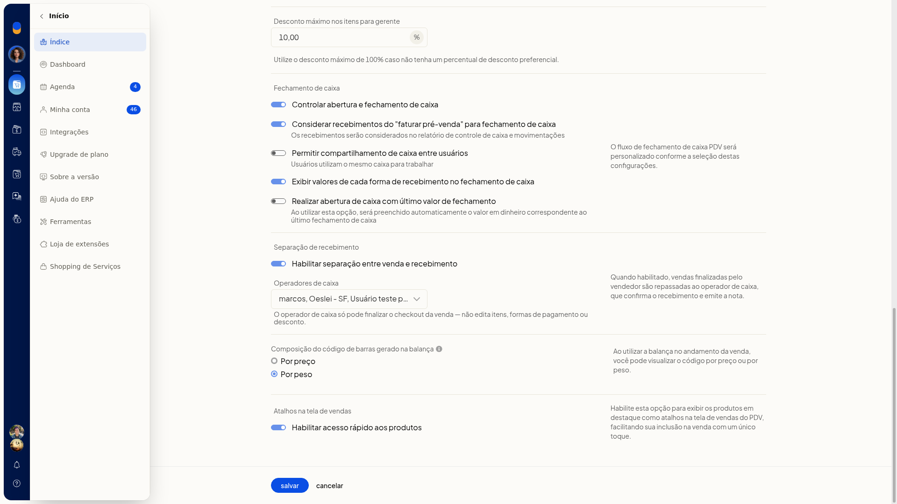

Guia de implantação: loja física
No PDV da Olist, você define as regras da loja física numa única tela: a natureza de operação usada automaticamente na NFC-e, o depósito padrão do estoque e o fechamento da venda e do caixa.
Também é possível ajustar situação, marcador, lista de preço, impressão, desconto, separação de recebimento, balança e atalhos de produtos na tela de vendas. A configuração fica em Configurações > Configurações ERP, na categoria Vendas, no item Configurações do PDV.
Pré-requisitos
- Naturezas de operação e depósitos já cadastrados. As listas só mostram registros existentes, além de Selecione.
- Listas de preço, marcadores e pessoas já cadastradas na conta, se for preciso escolhê-los. Ao lado de Marcador padrão para vendas há o link adicionar marcador.
Importante
- A natureza padrão é utilizada automaticamente na emissão da NFC-e.
- Com Bloquear emissão de vendas com estoques que não podem ser atendidos em Sim, a venda no PDV com produtos sem estoque é bloqueada.
- A emissão automática via NFCe desabilita a emissão de NFe na conclusão da venda.
- O operador de caixa só finaliza o checkout da venda: não edita itens, formas de pagamento ou desconto.
- Com a separação habilitada, a venda finalizada pelo vendedor é repassada ao operador de caixa, que confirma o recebimento e emite a nota.
- A confirmação de vendedor só aparece quando o vendedor selecionado é o mesmo da venda anterior.
- Com a exigência ativa, a venda só é concluída se o vendedor for informado.
- Com a exigência ativa, o cliente precisa ter documento informado para concluir a venda.
- Natureza, depósito, lista de preço, marcador e operadores não são criados nesta tela. O atalho para incluir item é o link adicionar marcador.
- A opção de selecionar lista de preços não aparece para empresas com PAF-NFC-e.
- Faturar pré-venda não aparece para empresas com PAF-NFC-e e exige permissão para editar vendas. Se a opção não aparecer para você, peça acesso ao administrador da conta.
Instruções
Nenhum campo desta tela é obrigatório.
-
No menu lateral, clique em Configurações e depois em Configurações ERP.
-
Na categoria Vendas, clique em Configurações do PDV.

-
Em Natureza de operação padrão para NFC-e, escolha uma natureza já cadastrada ou deixe Selecione.
-
Em Depósito padrão para lançamento de estoque, escolha o depósito das movimentações do PDV.

-
Em Bloquear emissão de vendas com estoques que não podem ser atendidos, escolha Não, Sim ou Utilizar configuração padrão dos pedidos de venda.
-
Em Fechamento de venda, marque as regras da loja. O fluxo de fechamento de venda do PDV é personalizado conforme a seleção.
Preferências da venda
- Em Situação padrão para vendas finalizadas, escolha Em aberto, Aprovado, Preparando envio, Faturado, Pronto para envio, Enviado ou Entregue.
- Em Marcador padrão para vendas, escolha Sem marcador ou um marcador já cadastrado. Para incluir um marcador, acesse o link adicionar marcador.
- Em Lista de preço preferencial, escolha Selecione ou uma lista já cadastrada. A lista pode ser alterada durante a venda.
Regras do fechamento
- Marque Vendedor obrigatório para exigir o vendedor na venda.
- Marque Confirmar vendedor a cada venda para pedir a confirmação quando o vendedor for o mesmo da venda anterior.
- Marque Cliente obrigatório (com CPF ou CNPJ) para exigir cliente com documento.
- Marque Bloquear vendas com total recebido inferior ao total da venda para impedir o fechamento com recebimento menor que o total.
- Marque Permitir a venda de produtos não cadastrados para aceitar produto que não está no cadastro.
- Marque Bloquear alteração de preço unitário do item para impedir a mudança do preço unitário.
- Marque Agrupamento automático de produtos iguais para agrupar, na visualização, produtos com o mesmo preço inseridos manualmente ou por código de barras.
- Marque Mostrar tela com formas de recebimento para exibir as formas de recebimento ao fechar a venda.
- Em Tipo de nota fiscal padrão no fechamento da venda, escolha Emitir automaticamente a NFCe ou Permitir a emissão de NFe.
- Em Impressão automática ao finalizar venda, selecione Recibo, NFCe e Recibo de troca. Use Selecionar todas as opções para marcar todas.
- Marque Voltar automaticamente ao início após enviar NFC-e para impressão para o PDV voltar à tela inicial depois que a NFC-e for autorizada e enviada para impressão automática.
- Em Desconto máximo nos itens e em Desconto máximo nos itens para gerente, digite o percentual com vírgula decimal. Use 100% se não houver percentual preferencial.


-
Em Fechamento de caixa, marque como o caixa é controlado. O fluxo de fechamento de caixa do PDV é personalizado conforme a seleção.
- Marque Controlar abertura e fechamento de caixa para controlar a abertura e o fechamento.
- Marque Considerar recebimentos do "faturar pré-venda" para fechamento de caixa para esses recebimentos entrarem no relatório de controle de caixa e movimentações.
- Marque Permitir compartilhamento de caixa entre usuários para as pessoas da conta usarem o mesmo caixa.
- Marque Exibir valores de cada forma de recebimento no fechamento de caixa para mostrar o valor de cada forma no fechamento.
- Marque Realizar abertura de caixa com último valor de fechamento para preencher o dinheiro do último fechamento de caixa.
- Marque Habilitar separação entre venda e recebimento para separar a venda do recebimento.
- Em Operadores de caixa, selecione as pessoas já cadastradas. Use Selecionar todos para marcar todas.
- Em Composição do código de barras gerado na balança, escolha Por preço ou Por peso.
- Em Atalhos na tela de vendas, marque Habilitar acesso rápido aos produtos para exibir produtos em destaque como atalhos na tela de vendas do PDV.

-
Clique em Salvar para gravar a configuração ou em Cancelar para sair sem gravar.
Informações adicionais
- A lista de preço preferencial pode ser alterada durante a venda.
- Com o bloqueio de estoque ativado, a venda no PDV com produtos sem estoque é bloqueada.
- Produtos iguais, com o mesmo preço e inseridos manualmente ou por código de barras, são agrupados na visualização quando o agrupamento automático está marcado.